Leviatã novo · o corpo inteiro
Bloco D, passo 1 · 18/10/2026 · gerado a partir do rabo M2 aprovado (rabo-leviata-sheet.png, quadro 0), que entrou como referência e como estilo.
O que está aqui. Quatro cabeças, duas sementes de cada. O resto do corpo é o mesmo nos oito: as placas de casco, a lava nas costuras e a nadadeira em leque de tubarão. Todos saíram de perfil e nenhum precisou ser descartado.
Como ler. Cada conceito aparece grande (×2) e depois dentro do jogo de verdade. A cena foi pausada e a textura do bicho foi trocada, então valem a mesma profundidade, o tint, o alpha e as camadas da frente:
- menu: no meio da travessia, a 70px de largura, com o tint
0x8c9bb6; - F2 perto: a silhueta no fim da fase (
setApproach(1), 133px, tint0x2a3352, alpha 0,8).
O que eu preciso de você: qual cabeça segue (e de qual semente), ou uma mistura (por exemplo, a cabeça de um com a barbatana dorsal de outro).
Hoje, para comparar
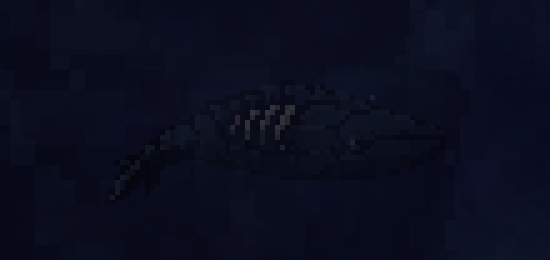
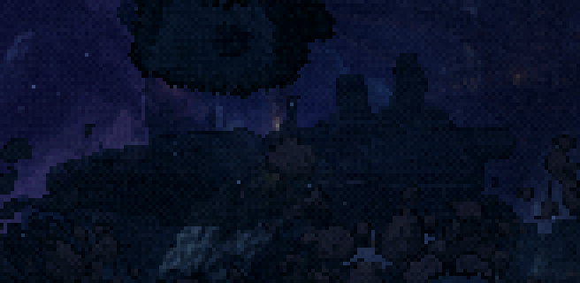
A · Baleia blindada cabeça de cachalote
Cabeça rombuda, olho pequeno, boca fechada. É a mais próxima do bicho de hoje. A semente 32 tem os dentes à mostra.
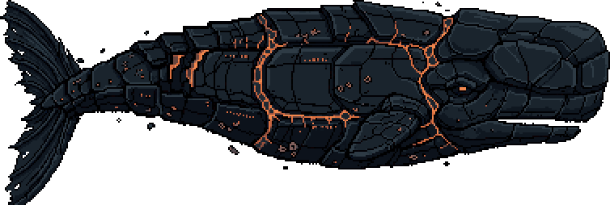
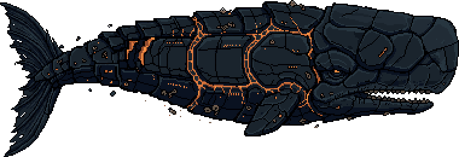
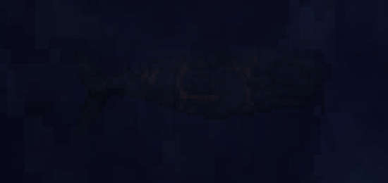
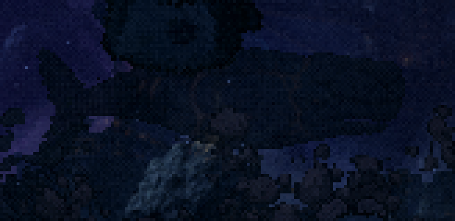
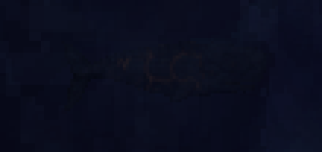
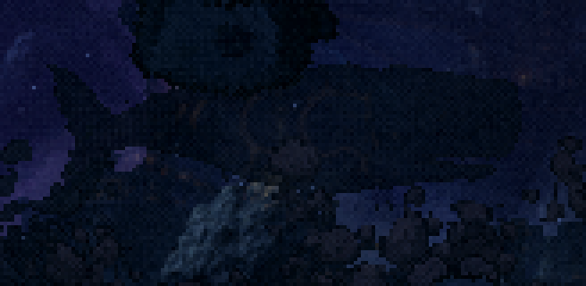
B · Tubarão a minha aposta
Focinho em ponta, guelras vazando lava, barbatana dorsal com os mesmos raios da nadadeira do rabo. É o que melhor combina com a nadadeira de tubarão que você escolheu, e a silhueta de longe é a que mais lê como bicho (a dorsal e a ponta).
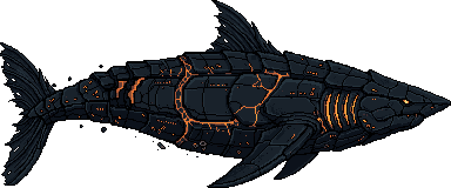
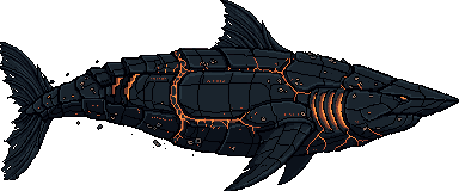
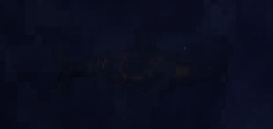
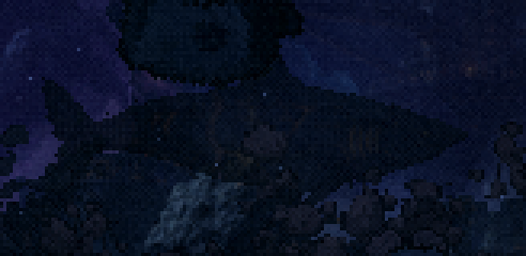
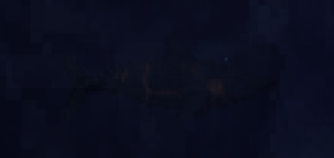
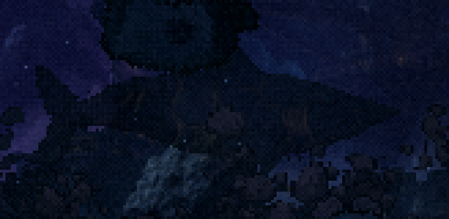
C · Mandíbula a boca do final
Mandíbulas abertas com presas e lava lá dentro. Conversa com a boca da cena final, por onde a nave entra. É o mais agressivo e o que mais funciona como "chefão". ⚠️ A semente 32 tem uma presa cinza clara na ponta, que precisaria de retoque.
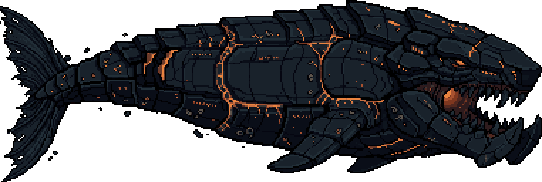
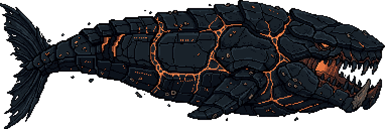
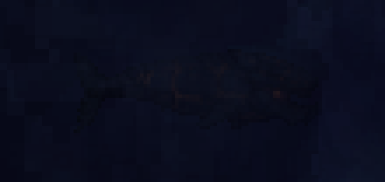
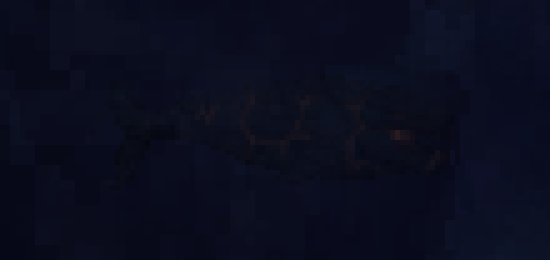
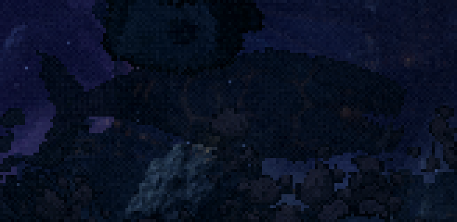
D · Proa aríete de encouraçado
Cabeça em cunha de placas, com fendas no lugar dos olhos e uma costura de lava na boca. É a que mais puxa para nave capital, o que pode ser bom (bicho-nave) ou ruim (o problema de hoje na silhueta).
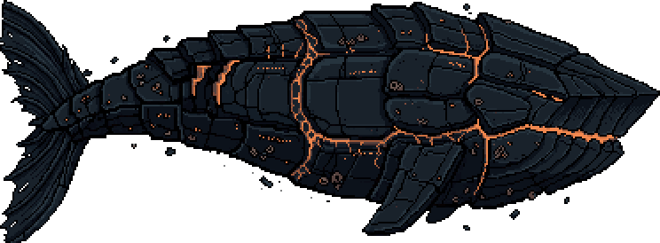
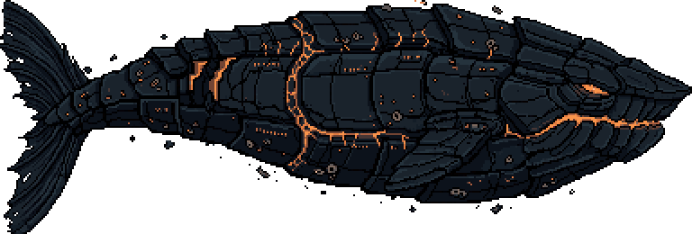
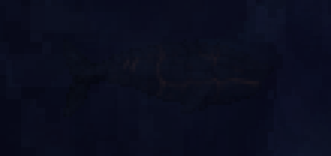
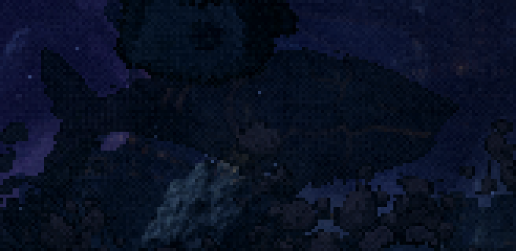
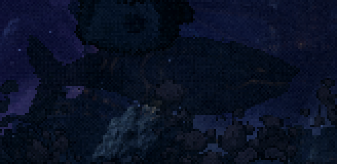
O que as capturas mostraram (vale para qualquer escolha)
- menu O casco quase preto, com o tint do menu, some a 70px: sobra só a lava. O bicho de hoje aparece por causa das costelas claras. Isso fica para o passo 3: a versão do menu nasce já no tamanho, com uma borda de luz fria nas costas (a luz da lua) ou com o tint revisto. A escolha da cabeça não depende disso.
- F2 perto Todos os novos leem como bicho, com rabo, nadadeiras e cabeça. O de hoje lê como laje. É o problema que o START apontou, resolvido pela forma.
- F2 longe No começo da fase (escala 0,5 e alpha 0,45) a silhueta não se vê, nem a de hoje nem as novas: está escura demais contra a pintura. Decidir no passo 4 se ela deve ser visível desde o início.
- F3 A mesma silhueta também aparece na F3 (
mode 'nebulosa', escala 1,15, alpha 0,5), coisa que o inventário do START não listava. Ela troca junto.
Os próximos passos, depois da escolha: a versão enfraquecida do mesmo desenho para o final (passo 2) e o nado no PixelLab para o menu (passo 3).
Ferramentas: scripts/_leviata/_gerar-corpo.mjs (o PixelLab, /generate-image-v2, 384×160), _folha-corpo.mjs (o grande e as reduções) e _capturar-corpo.mjs (o jogo pausado com a textura trocada).